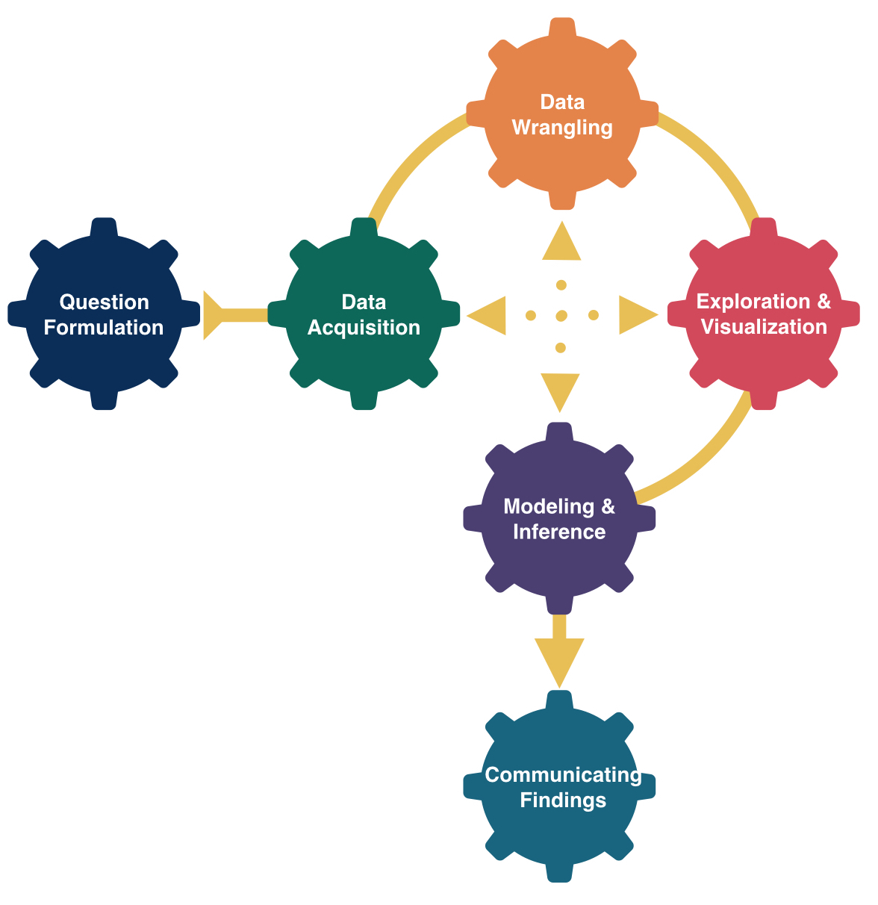
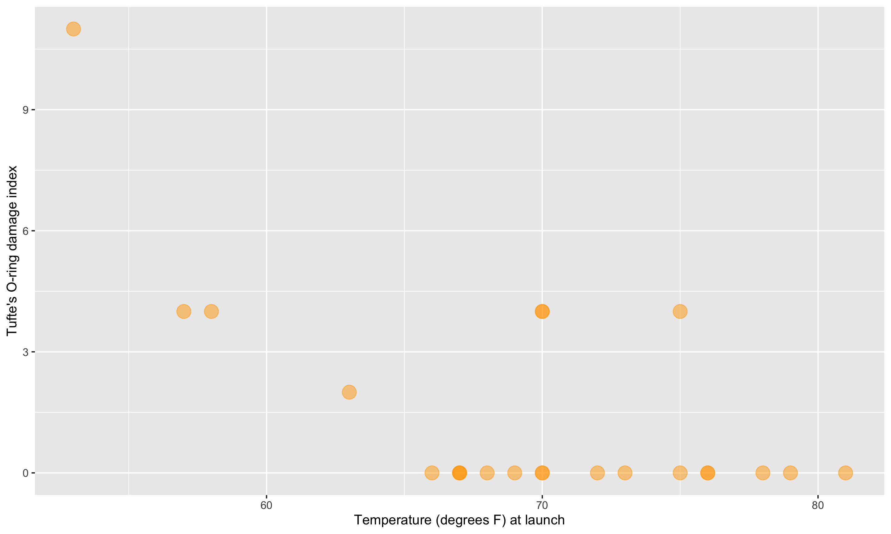
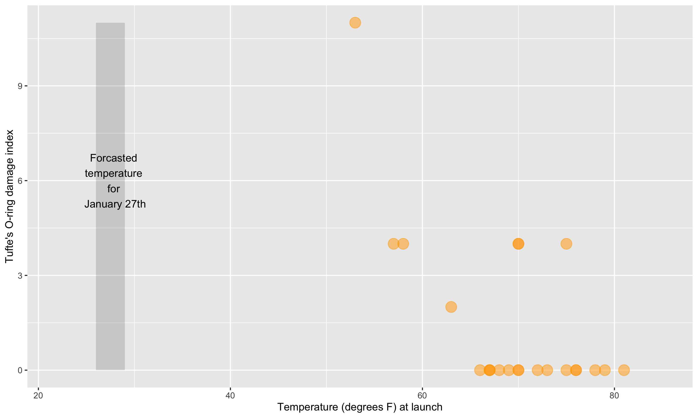
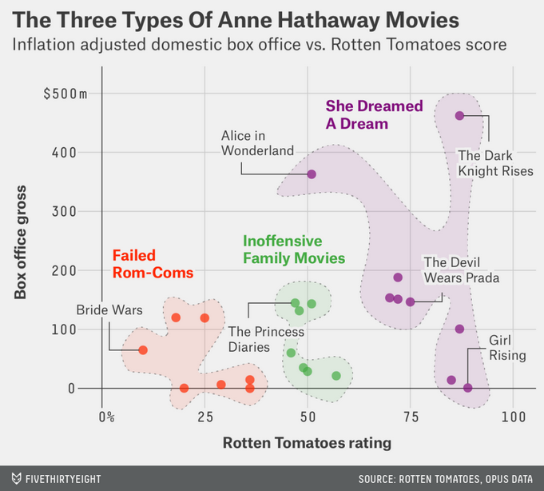
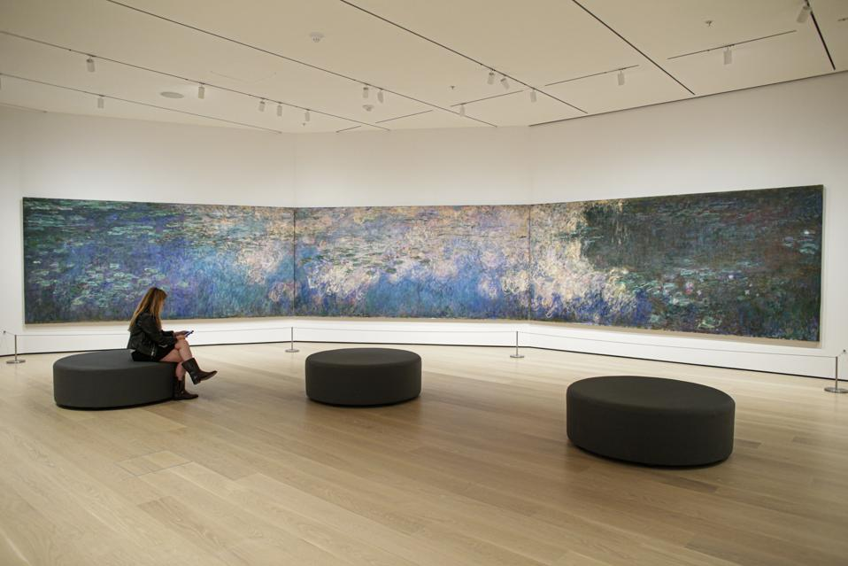
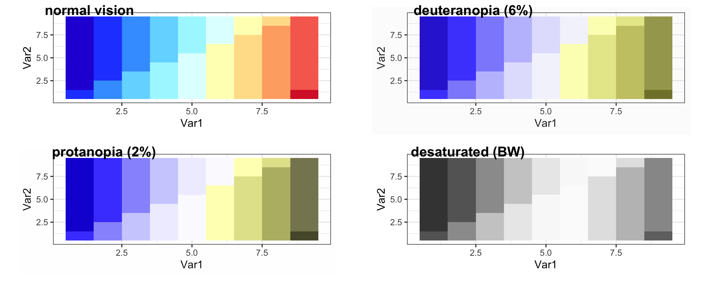
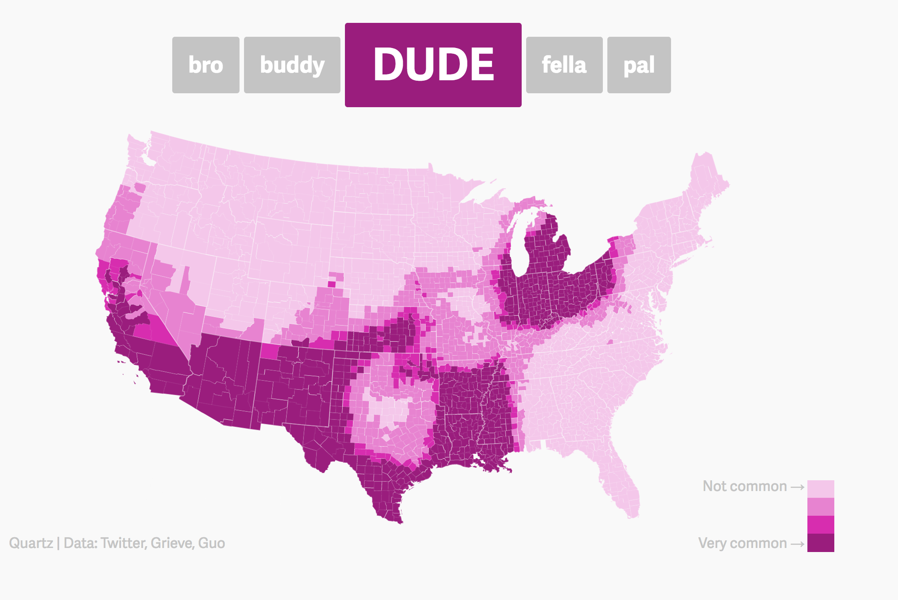
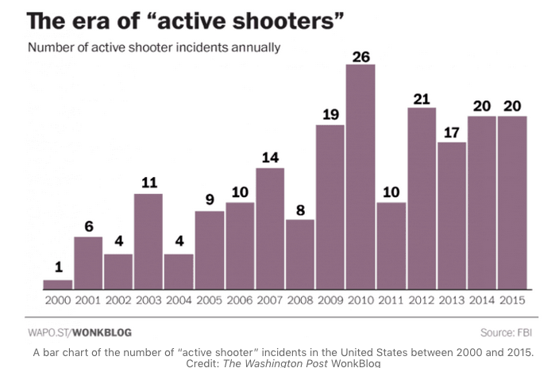
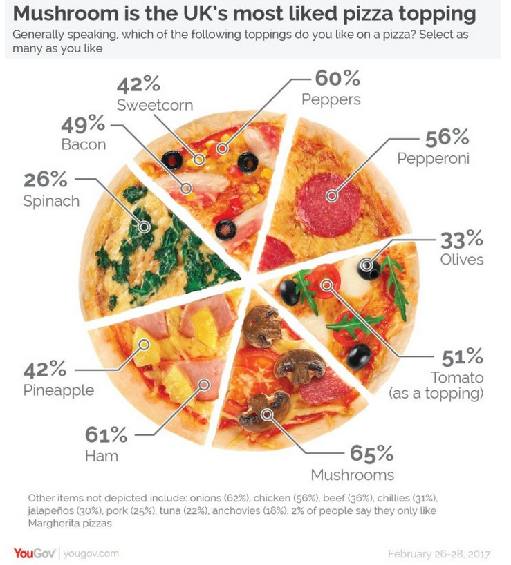

| ID | kind | .pred_AI | .pred_class | detector | native | name | model |
|---|---|---|---|---|---|---|---|
| 1 | Human | 0.9999942 | AI | Sapling | No | Real TOEFL | Human |
| 2 | Human | 0.8281448 | AI | Crossplag | No | Real TOEFL | Human |
| 3 | Human | 0.0002137 | Human | Crossplag | Yes | Real College Essays | Human |
| 4 | AI | 0.0000000 | Human | ZeroGPT | NA | Fake CS224N - GPT3 | GPT3 |
| 5 | AI | 0.0017841 | Human | OriginalityAI | NA | Fake CS224N - GPT3, PE | GPT4 |
| 6 | Human | 0.0001783 | Human | HFOpenAI | Yes | Real CS224N | Human |

Data Visualization
Megan Ayers
Math 141 | Spring 2026
Wednesday, Week 1
Before we get started…
if you are on the waitlist, please sign in to class here: https://tinyurl.com/Math141-Waitlst
Last Time
- Introductions
- Discussed big picture statistical thinking
- Introduced data frames
Goals for Today
- Review data frames.
- Motivate data visualizations.
- Develop language to talk about the components of a graphic.
- Practice deconstructing graphics.
- Discuss good graphical practices.
Math 141 Office Hours Schedule
- On Moodle
Data Frames
Data in spreadsheet-like format where:
Rows = Observations/cases
Columns = Variables
- Data from GPT Detectors Are Biased Against Non-Native English Writers. Weixin Liang, Mert Yuksekgonul, Yining Mao, Eric Wu, James Zou. CellPress Patterns and available in the
Rpackagedetectors.
Data Frames
| ID | kind | .pred_AI | .pred_class | detector | native | name | model |
|---|---|---|---|---|---|---|---|
| 1 | Human | 0.9999942 | AI | Sapling | No | Real TOEFL | Human |
| 2 | Human | 0.8281448 | AI | Crossplag | No | Real TOEFL | Human |
| 3 | Human | 0.0002137 | Human | Crossplag | Yes | Real College Essays | Human |
| 4 | AI | 0.0000000 | Human | ZeroGPT | NA | Fake CS224N - GPT3 | GPT3 |
| 5 | AI | 0.0017841 | Human | OriginalityAI | NA | Fake CS224N - GPT3, PE | GPT4 |
| 6 | Human | 0.0001783 | Human | HFOpenAI | Yes | Real CS224N | Human |
Columns = Variables
Variables: Describe characteristics of the observations
Quantitative: Numerical in nature
Categorical: Values are categories
Identification: Uniquely identify each case
Types of variables
- Identification: Uniquely identify each case
- Quantitative: Numerical in nature
- Those that can take a range of values are called continuous (e.g., age, income)
- Those that only take particular (often whole number) values are called discrete (e.g., result of a dice roll)
- Not every variable involving numbers is quantitative!
- Categorical: Values are categories
- Usually take values (e.g., Race/Ethnicity or Gender)
- But can take numeric values! (e.g., zip code)
- The values that a categorical variable can take are called its levels
- Ordinal categorical variables can be ordered (e.g., level of education, variables collected with a Likert scale)
- Categorical variables that cannot be ordered are called nominal (e.g., Race/Ethnicity)
Why construct a graph?
To explore the data.
To summarize the data.
To showcase trends and make comparisons.
To tell a compelling story.
Doing any of this by only looking at a data frame (even a small one) would be hard!
Challenger
On January 27th, 1986, engineers from Morton Thiokol recommended NASA delay launch of space shuttle Challenger due to cold weather.
- Believed cold weather impacted the o-rings that held the rockets together.
- Used 13 charts in their argument.
After a two hour conference call, the engineer’s recommendation was overruled due to lack of persuasive evidence and the launch proceeded.
The Challenger exploded 73 seconds into launch.
Challenger
Here’s one of those charts.

Challenger
Here’s another one of those charts.

Challenger
Here’s a graphic created in R from Statistician Edward Tufte’s data.

Challenger
This adaptation is a recreation of Edward Tufte’s graphic.

Now let’s learn the Grammar of Graphics.
We will use this grammar to:
Decompose and understand existing graphs.
Create our own graphs with the R package ggplot2.
Grammar of Graphics
- data: Data frame that contains the raw data
- Columns are variables used in the graph
- geom: Geometric shape that the data are mapped to.
- EX: Point, line, bar, text, …
- aesthetic: Visual properties of the geom
- EX: X (horizontal) position, y (vertical) position, color, fill, shape
- scale: Controls how data are mapped to the visual values of the aesthetic.
- EX: particular colors, log scale
- guide: Legend/key to help user convert visual display back to the data
For right now, we won’t focus on the names of particular types of graphs (e.g., scatterplot) but on the elements of graphs.
Example 1
- What are the variables?
- What geom are the variables map to?
- What are the aesthetics of the geom?
- How is each variable mapped to an aesthetic?
- What additional context is provided? Is any missing?
- What story is the graph telling?

Example 2
- What are the variables?
- What geom are the variables map to?
- What are the aesthetics of the geom?
- How is each variable mapped to an aesthetic?
- What additional context is provided? Is any missing?
- What story is the graph telling?

Visualization Considerations
What additional context should my graphs have?
For context, at a minimum include
- Axis labels (with units reported).
- Legends.
- Data source.
Think about the stories/questions your visualization answers.
Determine what context/background information your viewer needs.
Visualizing data involves editorial choices.
- What to highlight.
- What comparisons to make easy to see.
- What scales to use.
Context Example

Water Lilies

What visual cues are easier to compare?

What to consider with color?
Consider color blindness.

Color Palettes – Sequential

Maps, like the Dude map are also a great way to provide context!
Color Palettes – Diverging

Color Palettes – Qualitative

Many Ways To Visually Tell A Story
Washington Post’s Approach:

Bad Graphics
Because of all the design choices, it is much easier to make a bad graph than a good graph.

Misleading Graphics
Be careful that your design choices don’t cause your viewer to draw incorrect conclusions about the data:

- Just letting the software make all the design choices can still lead to misleading graphs (recall the Georgia COVID graph).
Summary Thoughts on Graphical Considerations
Good graphics are one’s where the findings and insights are obvious to the viewer.
- Add information and key context.
Facilitate the comparisons that correspond to the research question.
- Recall the three Georgia COVID counts graphs from Day 1!
Data visualizations are not neutral.
It is easier to see the differences and similarities between different types of graphics if we learn the grammar of graphics.
Practicing decomposing graphics should make it easier for us to compose our own graphics.
The DataLab @ Reed
Next time
- Tomorrow in lab: intro to using RStudio to code and explore data frames
- Friday: We’ll learn about the
ggplot2package so that we can use the grammar of graphics to create beautiful visualizations!